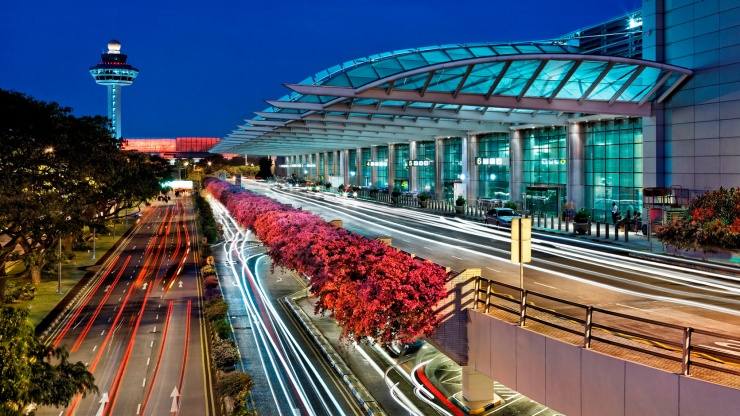
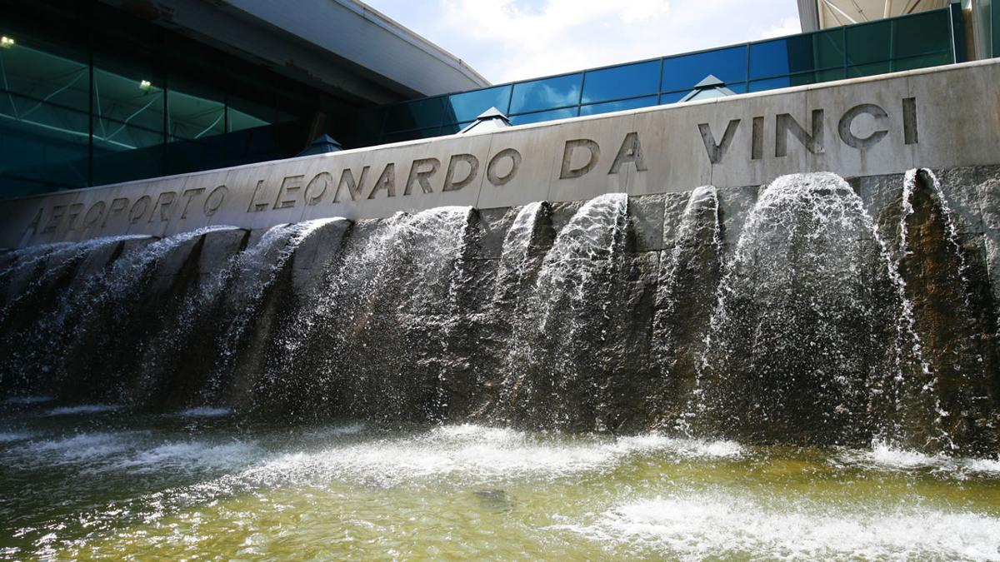
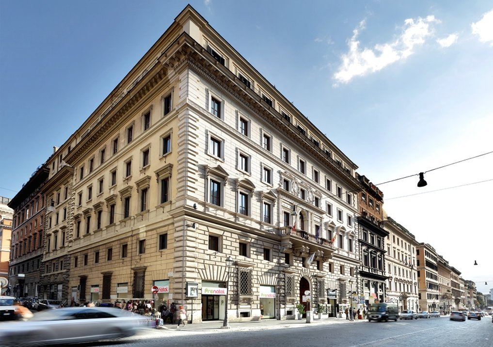
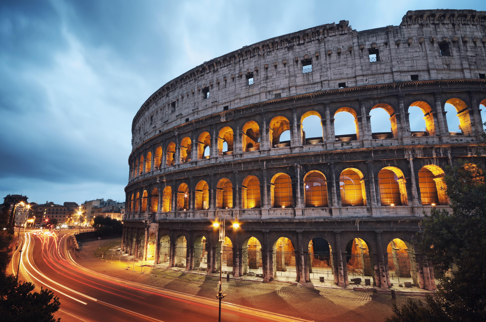
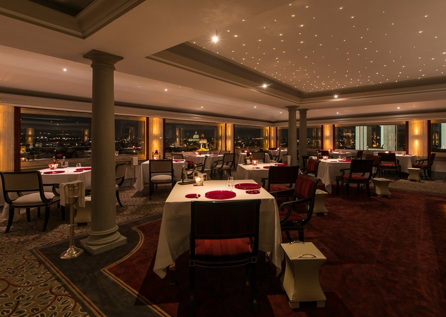
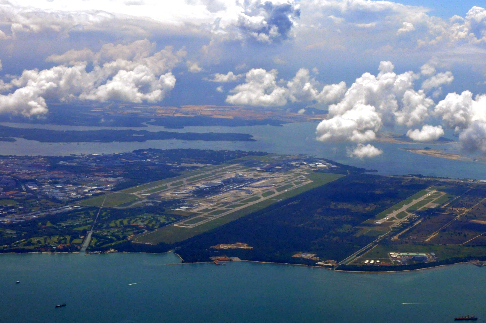

Roman Colosseum is a stone amphitheatre that was commissioned around A.D. 70-72 by Emperor Vespasian of the Flavian dynasty as a gift to the Roman people.
In A.D. 80, Vespasian’s son Titus opened the Colosseum-officially known as the Flavian Amphitheatre–with 100 days of games, including gladiatorial combats and wild animal fights. After four centuries of active use, the magnificent arena fell into neglect, and up until the 18th century it was used as a source of building materials. Though two-thirds of the original Colosseum has been destroyed over time, the amphitheatre remains a popular tourist destination, as well as an iconic symbol of Rome and its long, tumultuous history.
| Day 1 |  | 12pm leave Singapore for Italy. (Est. time 16Hrs flight) |
|  | Estimated arrival at 9pm Italy Time (4am in Singapore Time) | |
|  | Expected to arrive at hotel at 10.30pm, after which you can check-in into your rooms and OTOT | |
| Day 2 |  |
At 11.30pm we will be leaving the Hotel to eat at a renown café, called Café Café for lunch. At 2pm We will leave the café and walk to Roman Colosseum |
|  |
We will reach the Roman Colosseum latest by 2.15pm due to the Café being in very close proximity to the Colosseum. After which the tour of the Colosseum will immediately begin, the tour will last approximately 4Hrs, ending at 6.15pm. The Tour Guide will bring everyone around the vicinity to explore what the locals have to offer. We leave for dinner at 7.30pm and reach the destination at 7.45pm |
|
|  | We will be dining at a 1 star Michelin Restaurant, called Imàgo, where you can feast on high class food while seeing the beautiful night view of Rome. | |
| After eating finish, we go back to the hotel, where everyone can OTOT. | ||
| Day 3 |
We will check-out at 11am and leave for the airport. We will leaving Rome for Singapore at 2pm |
|
|  | (Est. Duration of Flight is 15Hrs) We will reach Singapore at 12pm Singapore Time (5am Italy Time)After which, that's the end of the Trip. |
What are you waiting for?